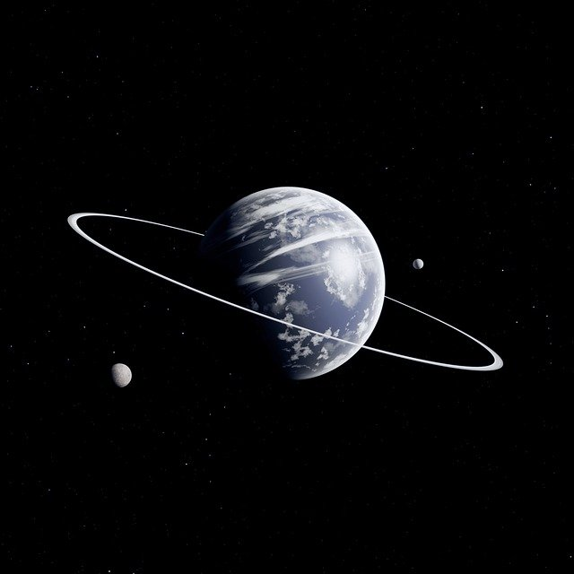

SpaceY je privatna kompanija koja se bavi istraživanjem svemira i nebeksih tela. Poput NASA-e i SpaceX-a, cilj nam je da ljudsku rasu uputimo ka sigurnoj i širokoj budućnosti među zvezdama, kao i otkriće novih kosmičkih fenomena prisutnih van naše tanke atmosfere.
Lista glavnih nebeskih tela u našem solarnom sistemu:
Pod pojmom nebeskih tela podrazumevaju se objekti u svemiru: zvezde, planete, asteroide, prirodne satelite i veća nebeska tela kao što su galaksije, crne rupe i kvazari. U ranom srednjem veku, ljudi su smatrali da se Sunce i Mesec okreću oko ravne ploče koju su nosila 3 slona koja su bila na ogromnoj kornjači. Mnogi astronomi, poput Galileja su znali da to nije tako, već da se Zemlja okreće oko Sunca, kao i ostale planete za koje su znali. U sunčevom sistemu, postoji 8 planeta (Merkur, Venera, Zemlja, Mars, Jupiter, Saturn, Uran, i Neptun), uključujući i 5 patuljastih planeta (Pluton, Cerera i Erida, Haumea i Makemake) mada se veruje da ih ima još mnogo i do sada je pronađeno 2000 patuljastih planeta koja kruže oko Sunca. Sunce takođe kruži oko centra galaksije Mlečni put, koja ima svoja kruženja oko drugih galaksija. Galaksije se udružuju u galaktička jata. Galaktičko jato kome pripada Mlečni put ima 17 članova koji su vezani gravitacijom.
Sunce je nama najbliža i najbolje proučena od svih zvezda. Oko njega kruži 8 planeta i njihovi sateliti, 5 patuljastih planeta, asteroidi, komete, meteori i čestice kosmičke prašine, tako da Sunce predstavlja središnju zvezdu Sunčevog sistema. Energija Sunca u vidu sunčeve svetlosti i toplote omogućava život na Zemlji putem procesa fotosinteze i utiče na klimu i vreme na Zemlji. Srednja udaljenost između Sunca i Zemlje je 149 600 000 km ili jedna astronomska jedinica, što svetlost pređe za 8 minuta i 18 sekundi.
Sunce pripada spektralnoj klasi G2V. G2 označava da je temperatura na površini približno 5.500°C (5.780 K), što mu daje belu boju, mada se Sunce čini žuto zbog atmosferskog rasipanja, koje uklanja talase kraćih talasnih dužina (plavu i ljubičastu svetlost) i ostavlja spektar frekvencija koje ljudsko oko opaža kao žuto. Ovo rasipanje daje okolnom nebu njegovu plavu boju. Kada se Sunce nalazi nisko na nebu rasipa se još više svetlosti, pa se Sunce čini narandžasto ili crveno. Sunčev spektar sadrži linije jonizovanih i neutralnih metala, kao i vrlo slabe vodonikove linije. Slovo V (rimski broj 5) u oznaci spektralne klase pokazuje da je Sunce zvezda glavnog niza. Ovo znači da ono generiše svoju energiju nuklearnom fuzijom jezgara vodonika u helijum.
Sunce je gotovo savršena kugla (razlika između ekvatora i pola je samo 10 km) i sastoji se od gasovite vruće plazme. Ono ima jako magnetno polje. Prečnik Sunca je oko 1 392 000 km, što je 109 puta veće od Zemlje i masu od oko 2×10^30 kilograma, te je 330.000 teže od Zemlje, i ono sačinjava 99,86% mase celog Sunčevog sistema. Sunce se sastoji od vodonika (oko 74% njegove mase ili 92% njegove zapremine), helijuma (oko 24% mase i 7% zapremine) i male količine ostalih elemenata, uključujući gvožđe, nikl, kiseonik, silicijum, sumpor, magnezijum, ugljenik, neon, kalcijum i hrom.
Kako se celi svemir širi, tako se i mi krećemo zajedno s našom galaksijom ili Mlečnim putem, prema konstelaciji Hidra i to brzinom od 550 km/s. Najbliža nam je zvezda Alfa Kentaur, koja je udaljena 4,2 godine svetlosti. Ako uzmemo u obzir kretanje naše galaksije Mlečnog puta i okretanje oko centra galaksije, onda je rezultanta kretanja našeg Sunca 370 km/s, u smeru sazvežđa Lav i Pehar.

| Osnovni podaci: | |
|---|---|
| Prosečna temperatura: | 5.500°C |
| Masa: | 1.989 × 10^30 kg |
| Gravitacija: | 274 m/s² |
| Udaljenost od Zemlje: | 149.600.000 km |
| Spektralna klasa: | G2V |
| Vreme obilaska oko galaksije: | 2,2 x 10^8 godina |

Merkur je najmanja, a ujedno i najbliža planeta Suncu i jedna od 8 planeta u Sunčevom sistemu, čiji orbitalni period traje oko 88 zemaljskih dana. Gledano sa Zemlje, Merkuru je potrebno skoro 116 dana da napravi jedan puni krug oko svoje orbite, što je mnogo brže nego kod i jedne druge planete. Upravo ova brzina revolucije Merkura je i bila razlog zbog kojeg je ta planeta dobila ime po starorimskom bogu trgovine i putovanja i glasniku bogova Merkuru (lat. Mercurius; grčki ekvivalent je Hermes).
Zbog gotovo nepostojanja atmosfere koja bi ublažila sunčevo zračenje, površina Merkura je izložena najintenzivnijim temperaturnim varijacijama među svim planetama Sunčevog sistema, koje se na području oko ekvatora kreću između -173°C u toku noći i +427°C u toku dana. Temperature na polovima su konstantno ispod -93°C. Merkur je specifičan i po nagibu svoje ose jer ima najmanju vrednost među svim planetama Sunčevog sistema i iznosi svega 2,11′ (oko trideseti deo stepena), ali i po najizraženijem ekscentricitetu orbite. U fazi afela Merkur je čak 1,5 puta dalje od Sunca u odnosu na perihel. Prosečna udaljenost Merkura od Sunca je 0,387 AJ ili 57.910.000 km. Godišnja doba ne postoje u smislu godišnjih doba na Zemlji, što je posledica malog nagiba ose. Površina Merkura je izbrazdana brojnim kraterima meteorskog porekla i slična je površini Meseca, što navodi na zaključak da je sama planeta u geološkom stanju mirovanja više miliona godina.
U gravitacionom smislu Merkur je gravitaciono zarobljena planeta i ima potpuno jedinstven sistem rotacije u odnosu na ostale objekte Sunčevog sistema. Za vreme jedne revolucije, Merkur izvrši svega jednu i po rotaciju (dok Zemlja ima odnos 365:1).
Pošto Merkurova orbita leži u ravni sa orbitom Zemlje (kao što je slučaj i sa Venerom), ova planeta je vidljiva na zemljinom nebu tokom ranog jutra i uveče, ali ne i tokom ponoći. Zbog blizine Sunca, retko je u povoljnom položaju za posmatranje, a i tada je vidljiv iznad horizonta samo kratko vreme pre zalaska ili nakon izlaska Sunca. Gledano sa Zemlje, Merkur je vidljiv u raznim fazama (poput Meseca u svojim menama).

| Osnovni podaci: | |
|---|---|
| Prosečna temperatura: | 430°C |
| Masa: | 3.285 × 10^23 kg |
| Gravitacija: | 3.7 m/s² |
| Najbliža daljenost od Zemlje: | 77.000.000 km |
| Atmosferski pritisak: | ~10^-15 bara |
| Vreme obilaska oko Sunca: | 88 dana |
| Prirodni satelit: | nepoznato |
Venera je jedna od 8 planeta Sunčevog sistema, i druga je planeta po udaljenosti od Sunca, sa prosečnom udaljenošću od oko 0,72 AJ (ili 108.200.000 km). Oko Sunca se kreće gotovo kružnom orbitom, a jednu rotaciju obavi za 224,7 zemaljskih dana. Nema prirodnih satelita u svojoj orbiti. Drugo je po sjaju nebesko telo na noćnom nebu gledano sa Zemlje, odmah posle Meseca, sa vrednostima prividne magnitude od -4,9 do -3,8.
Ime je dobila po starorimskoj boginji ljubavi i lepote Veneri (grčki ekvivalent je Afrodita) i jedina je planeta koja je dobila ime po nekom ženskom mitološkom božanstvu. Gledano sa Zemlje najuočljivija je u sumrak i u ranu zoru, te se često u narodu naziva i Zvezdom Danicom i Zvezdom Večernjačom.Venera spada u grupu terestričkih planeta, a zbog sličnosti sa Zemljom u pogledu dimenzija (najbliža je planeta po udaljenosti od Zemlje i ima približno sličnu veličinu), gravitacije i složene unutrašnje strukture često je označavaju „Zemljinom sestrom“.
Venerina atmosfera je veoma gusta sa strukturnim udelom ugljen-dioksida u njenoj građi od čak 96%. Atmosferski pritisak na površini je i do 92 puta viši nego na Zemlji i iznosi 92 bara.Zbog veoma guste atmosfere koja na planeti stvara efekat staklene bašte, površinske temperature su veoma visoke i iznose u proseku oko 735 K, što Veneru čini najtoplijom planetom Sunčevog sistema. Planeta je obavijena gustim i izrazito reflektujućim oblacima sačinjenim od sumporne kiseline.
Postoji mogućnost da su u prošlosti na površini Venere postojali okeani koji su verovatno isparili usled povećanja temperatura uzrokovanih efektom staklene bašte. Slobodni atomi vodonika su potom najverovatnije „otplutali u slobodni svemir“ zbog slabog intenziteta magnetnog polja planete, a pod dejstvom solarnih vetrova.
Površina Venere je veoma suva i podseća na izrazito suva pustinjska područja na Zemlji sa kojih se mestimično izdižu vulkanske kupe i stenovite ploče. Vulkanska aktivnost na Veneri je veoma visoka i verovatno je ona glavni uzročnik gomilanja ogromnih količina ugljen-dioksida u atmosferi.

| Osnovni podaci: | |
|---|---|
| Prosečna temperatura: | 471°C |
| Masa: | 4.8676 × 10^24 kg |
| Gravitacija: | 8.87 m/s² |
| Najbliža udaljenost od Zemlje: | 61.000.000 km |
| Atmosferski pritisak: | 92 bara |
| Vreme obilaska oko Sunca: | 225 dana |
| Prirodni satelit: | nema |
Zemlja je treća planeta po udaljenosti od Sunca i jedina poznata planeta u svemiru na kojoj postoji život. Prema radiometrijskom računanju i mišljenju da je ceo Sunčev sistem nastao u jednom procesu, procenjuje se da se Zemlja formirala pre više od 4,5 milijardi godina, što je utvrđeno određivanjem vremena poluraspada urana i torijuma.
Gravitacija Zemlje međusobno deluje sa drugim objektima u svemiru, posebno sa Suncem i Mesecom, jedinim prirodnim satelitom Zemlje, koji je počeo da kruži oko Zemlje pre 4,53 milijardi godina. Gravitaciono delovanje između Zemlje i Meseca uzrokuje okeanske plime i oseke, stabilizuje orijentaciju Zemlje oko svoje ose i postepeno usporava istu. Zemlja je najgušća planeta u Sunčevom sistemu i najveća od četiri terestričke planete.
Litosfera Zemlje je podeljena na nekoliko krutih tektonskih ploča koje migriraju na površini tokom mnogo miliona godina. Zemlja je jedina planeta Sunčevog sistema gde voda može da opstane u tečnom stanju. Oko 71% površine Zemlje je pokriveno vodom, uglavnom okeanima. Preostalih 29% je kopno koja čine kontinenti i ostrva koja imaju brojna jezera, reke i druge izvore vode koji doprinose hidrosferi. Većina polarnih područja Zemlje pokrivena je ledom, uključujući ledenu ploču Antarktika i morski led Arktika. Unutrašnjost Zemlje je aktivna sa unutrašnjim jezgrom od čvrstog gvožđa i tečnim spoljašnjim jezgrom koji generiše magnetno polje Zemlje i konvekcioni mantl koji pokreće tektonske ploče. Magnetsko polje zajedno sa atmosferom, štiti od radijacije, štetne po živa bića koja naseljavaju planetu.
| Osnovni podaci: | |
|---|---|
| Sadrži život | ✓ |
| Prosečna temperatura: | 16°C |
| Masa: | 5.972.37×10^24 kg |
| Gravitacija: | 9.81 m/s² |
| Najbliža udaljenost od Zemlje: | 61.000.000 km |
| Pritisak na površini: | 101.3 kPa (MSL) |
| Period rotacije: | 23h 56m 4,100s |
| Prirodni satelit: | Mesec |
| Veštački sateliti: | 1.700 |
Mesec (lat. Luna) zemljin je prirodni satelit i ujedno najbliže nebesko telo, udaljeno u proseku 384 401 km, tako da svetlost s Meseca na Zemlju stiže za 1,25 sekundi. Mesec obilazi Zemlju po eliptičnoj stazi srednjom brzinom od 1,02 km/s, i prelazi dnevni luk od 13° 10". Mesec je čvrsto nebesko telo prečnika 3 647 km, te je po površini 14 puta, po obimu 50 puta, a po masi 81 puta manje od Zemlje. Ubrzanje sile teže je na Mesecu 6 puta manje nego na Zemlji. Mesec obiđe oko Zemlje za 27 dana 7 sati 43 minuta i 11.6 sekundi (siderički mesec).
Mesec je najsjajnije nebesko telo nakon Sunca, čija svetlost je reflektovana (ne stvara vlastitu svetlost poput zvezda). Pun Mesec prividne je zvezdane veličine –12,74, albedo mu je 0,07, a ugaona veličina se vidi pod uglom od približno 0,5°. Zemlji okreće stalno istu stranu, jer se obilazak i rotacija odvijaju u istom smeru, a vremena obilaska i okreta su jednaka, što je posledica Zemljinog plimnog uticaja. Staza mu je nagnuta prema ravni ekliptike za 5° 9'.
Više od polovine površine Meseca vidi se zbog libracije (59%). Mesečeve mene promene su Mesečeve osvetljenosti tokom sinodičnog meseca (mladi Mesec, prva četvrt, pun Mesec i poslednja ili zadnja četvrt), a nastaju zbog stalne promene Mesečeva položaja prema Zemlji i Suncu.
| Osnovni podaci: | |
|---|---|
| Temperatura(danju/noću): | 127°C / -173°C |
| Masa: | 7.3477 × 10^22 kg |
| Gravitacija: | 1.622 m/s² |
| Najbliža udaljenost od Zemlje: | 356.500 km |
| Period revolucije: | 27,3217 dana |
| Period rotacije: | 27,322 dana |
Mars je četvrta planeta po udaljenosti od Sunca i druga najmanja u Sunčevom sistemu, nakon Merkura. Dobila je ime po rimskom bogu rata — Marsu. Takođe se naziva i „Crvenom planetom”, jer na površini preovladava gvožđe(III) oksid koji planeti daje crvenkastu boju. Mars je terestrička planeta sa tankom atmosferom, i površinskim odlikama koje podsećaju na Mesec — udarni krateri, i na Zemlju — vulkanske kupe, doline, pustinje i polarne ledene kape. Period rotacije i godišnja doba na Marsu su takođe slična onima na Zemlji, a sličan je i nagib ose rotacije planete koji uslovljava godišnja doba.
Na Marsu se nalazi Olimp (Olimpus Mons) — najveći vulkan i za sada druga najviša planina
u Sunčevom sistemu (najviša na nekoj od planeta), kao i Dolina Marinera — jedan od
najvećih kanjona u Sunčevom sistemu. Depresija Borealis na severnoj polulopti zauzima
40% površine planete i moguće je da je nastala velikim udarom drugog nebeskog tela u Mars
tokom formiranja Sunčevog sistema.
Sve do prvog uspešnog proleta sonde Mariner 4 pored Marsa 1965. godine, mnogo se pričalo
o prisustvu vode u tečnom stanju na površini. Ova nagađanja bila su zasnovana na periodičnim promenama svetlih
i tamnih predela na površini, naročito oko polarnih regiona; posmatrači, predvođeni Đovanijem Skjaparelijem
i Persivalom Louelom, zaključili su da su to mora i kontinenti.
Pošto je ka Marsu poslat veliki broj svemirskih sondi (orbitera, lendera i rovera), danas je moguće sprovoditi astronomska osmatranja sa Marsa. Kada se gleda sa površine planete, satelit Fobos zauzima samo ⅓ ugaonog prečnika koji Mesec zauzima kada se gleda sa Zemlje (kada bi kosmonaut stajao na površini Marsa, Fobos bi na nebu bio tri puta manji u odnosu na izgled punog Meseca sa Zemlje). Drugi Marsov prirodni satelit — Dejmos, sa površine više liči na zvezdu, i samo je malo sjajniji od planete Venere gledano sa Zemlje.
Mars ima dva relativno mala prirodna satelita — Fobos (prečnika oko 22 km) i Dejmos (prečnika oko 12 km), koji se nalaze u relativno niskoj orbiti oko planete. Danas je najšire prihvaćena teorija o njihovom poreklu da su „uhvaćeni” asteroidi, mada nije isključeno i neko drugo poreklo. Oba nebeska tela otkrio je američki astronom Asaf Hol, 1877. godine. Nazvani su po likovima Fobu (panika/strah) i Dimu (teror/užas) koji su, u grčkoj mitologiji, pratili svog oca, boga Aresa, u bitku.
Sa površine Marsa, kretanje Fobosa i Dejmosa po nebu razlikuje se od kretanja Meseca gledano sa Zemlje. Fobos izlazi na zapadu, i zalazi na istoku, da bi se ponovo pojavio na zapadu samo 11 sati kasnije.
| Osnovni podaci: | |
|---|---|
| Prosečna temperatura: | -60°C |
| Masa: | 0,64171 × 10^24 kg |
| Gravitacija: | 3,711 m/s² |
| Najbliža udaljenost od Zemlje: | 54.600.000 km |
| Atmosferski pritisak: | 0,636 (0,4 – 0,87) kPa |
| Period revolucije: | 687 dana |
| Period rotacije: | 24,6597 sati |
| Prirodni sateliti: | Fobos i Dejmos |
| Fobos | Dejmos | |
|---|---|
| Masa: | 10,8 | 1,8 (x 10^15 kg) |
| Daljina(Mars): | 9,377 | 23,436 (km) |
| Gravitacija: | 0,003 | 0,0057 (m/s2) |
| Dimenzije: | Fobos - 27 × 22 × 18 km |
| Dejmos - 15 km × 12,2 km × 11 km | |
Jupiter (lat. Iuppiter; grč. Δίας) predstavlja jednu od 8 planeta Sunčevog sistema i ujedno najmasivnije nebesko telo u celom Sunčevom sistemu posle Sunca. Sa masom od oko 1,8986×10^27 kg i do 2,5 puta je masivniji od preostalih 7 planeta zajedno, odnosno njegova masa čini nešto više od hiljaditog dela mase Sunca, ili 317,8 Zemljinih masa.
Peta je planeta po udaljenosti od Sunca i pripada grupaciji planeta poznatih kao gasoviti džinovi (u literaturi poznate i kao Planete Jupiterovog tipa ili Jovijanske planete), zajedno sa Saturnom, Uranom i Neptunom. Od Sunca je udaljen u proseku oko 5,20 AJ, odnosno oko 778.330.000 km. Sa vrednostima prividne magnitude od −1,6 do −2,94 četvrto je najsjajnije nebesko telo gledano sa površine zemlje (posle Sunca, Meseca i Venere). Njegovo postojanje utvrdili su još drevni astronomi antičkog perioda, a ime planete potiče od vrhovnog starorimskog božanstva Jupitera (starogrčki ekvivalent je bog Zevs).
Kao gasoviti džin Jupiter je najvećim delom izgrađen od gasova i manjim delom od tekućih elemenata, sa dominantnim udelom vodonika (H2) i helijuma (He). U znatnijoj meri u strukturi planete se nalaze i metan (CH4), amonijak (NH3), vodonik deuterid (HD), etan (C2H6) i voda (H2O). Moguće je da ima kamenito jezgro sačinjeno od težih elemenata koji se nalaze pod velikim pritiskom. Zbog gasovite građe površina Jupitera nije jasno definisana i na planeti ne postoje oblici reljefa karakteristični za terestričke planete, a samim tim i gustina planetarne mase je znatno manja u poređenju sa istom grupacijom planeta.
Zbog velike brzine rotacije planeta ima elipsoidan oblik i dosta je spljoštena na polovima, a ispupčena na ekvatoru. Razlika između ekvatorijalnog (71.492±4 km) i polarnog poluprečnika (66.854±10 km) je oko 4.638 km.
Jupiter je planeta sa najdebljim slojem atmosfere među svim planetama Sunčevog sistema, i njegova atmosfera se pruža u visine do preko 5.000 km. Kako planeta nema čvrstu podlogu donjom granicom atmosfere se smatra tačka na kojoj atmosferski pritisak ima vrednost od 10 bara (1МРа). Cela atmosfera je veoma aktivna i turbulentna i karakterišu je veoma jaki vetrovi brzina i do 500 km/čas. Najkarakterističnija pojava vezana za atmosferu Jupitera je Velika crvena pega, gigantska oluja ovalnog oblika čije postojanje je utvrđeno još u XVII veku.
| Osnovni podaci: | |
|---|---|
| Prosečna temperatura: | (Oblaci) -145°C |
| (Jezgro) 24.000°C | |
| Masa: | 1.898,6 × 10^24 kg |
| Gravitacija: | 24,79 m/s² |
| Najbliža udaljenost od Zemlje: | 588.600.000 km |
| Period rotacije: | 9,925 sati |
| Atmosferski pritisak: | površina 20-200 kРа |
| Prirodni sateliti: | 79 |
Saturn je šesta planeta u Sunčevom sistemu. Saturn je udaljen 9,54 AJ ili 1.429.400.000 km od Sunca, ima prečnik 120.536 km (ekvator) i masu 5,68 × 10^26 kg. Saturn je po veličini druga planeta Sunčevog sistema nakon Jupitera. Obiđe Sunce za 29,5 godina na srednjoj udaljenosti 1,426 · 109 km. Telo mu je znatno spljošteno (ekvatorski prečnik 120.536 km, polarni prečnik 108.728 km), tako da je najspljošteniji među planetama. Masa mu je 95 puta veća od Zemljine. Jedina je planeta čija je gustina manja od gustine vode (690 kg/m3).
Saturn se sastoji pretežno od vodonika i helijuma (jednak odnos kao kod Jupitera). Ispod gasovite atmosfere prostire se sloj molekularnog vodonika s nešto zamrznute materije (u kojoj ima tragova metana, amonijaka i drugog), zatim sloj metalnoga vodonika, te središte sa stenovitom jezgrom. Temperatura je u središtu vrlo visoka (11.727°C), pa je to Saturnov izvor energije uporediv s energijom koju prima Sunčevim zračenjem; temperature oblačnoga sloja iznosi –130 °C, dok bi temperatura samo zbog doprinosa Sunčevog zračenja bila –170°C.
U atmosferi se primećuju svetliji i tamniji oblaci uporedni s ekvatorom, manje istaknuti nego kod Jupitera, jer se, zbog niže temperature, stvaraju bliže središtu planete. Među oblacima se opažaju vrtlozi, kao Velika bela pega. Infracrveno zračenje otkriva topliji polarni vrtlog, vruću pegu. Brzina vetra iznosi do 500 m/s.
Karakteristika Saturna su prstenovi koji ga opasuju u 7 pojaseva, a svaki prsten nosi slovo abecede od A do F. Razmaci između pojaseva nose imena po astronomima koji su ih otkrili (Kasini, Gverin, Hajgens, Maksvel, Enke). Kao i Jupiter, Saturn ima mnogo satelita. Osim satelita, u ravnini Saturnovog ekvatora kruži ogroman broj satelitskih čestica, koje čine koncentrične prstene.
| Osnovni podaci: | |
|---|---|
| Prosečna temperatura: | (Oblaci) -130°C |
| (Jezgro) 11.727°C | |
| Masa: | 568,46 × 10^24 kg |
| Gravitacija: | 10,44 m/s² |
| Najbliža udaljenost od Zemlje: | 1.200.000.000 km |
| Atmosferski pritisak: | 140 kPa |
| Period rotacije: | 10,656 sati |
| Prirodni sateliti: | 62 |
Uran je sedma planeta od Sunca, treća najveća i četvrta najmasivnija planeta u Sunčevom sistemu. Dobio je ime po starogrčkom božanstvu neba Uranu, ocu Hrona (Saturna) i dedi Zevsa (Jupitera). Uran je prva planeta otkrivena u modernim vremenima. Iako je vidljiv golim okom kao i ostale ranije otkrivene planete, posmatrači ga nisu priznavali za planetu zbog njegove slabe vidljivosti. Vilhelm Heršel je objavio njegovo otkriće 13. marta 1781, proširivši poznate granice Sunčevog sistema po prvi put u novijoj istoriji. Uran je takođe prva planeta otkrivena teleskopom.
Uran i Neptun imaju drugačiji unutrašnji i atmosferski sastav od većih gasovitih divova Jupitera i Saturna. Zbog toga ih astronomi ponekad svrstavaju u posebnu kategoriju „ledeni divovi“. Uranova atmosfera, iako je poput Jupiterove i Saturnove sastavljena pretežno od vodonika i helijuma, sadrži i velike procente vodenog, amonijačnog i metanskog leda, uz uobičajene tragove ugljovodonika. Atmosfera Urana je najhladnija planetarna atmosfera u Sunčevom sistemu, uz najnižu temperaturu od 49 K (−224°C). Atmosfera ima složenu slojevitu strukturu, sa vodom za koju se misli da čini najniže oblake, a za metan se misli da čini najviše slojeve oblaka.
Kao i ostale planete-džinovi, i Uran ima sistem prstenova (do sada otkriveno 13), magnetosferu i 27 satelita. Uranov sistem ima jedinstvenu konfiguraciju među planetama Sunčevog sistema, pošto je njegova osa rotacije položena na bok, skoro u ravan njegove revolucije oko Sunca; njegov južni i severni pol leže tamo gde je većini planeta ekvator. Slike sa Vojadžera 2 su prikazale Uran kao nezanimljivu planetu bez oblaka ili oluja koje su imale druge planete-džinovi. Međutim, posmatrači sa Zemlje su nedavnih godina primetili znake sezonskih promena i pojačane aktivnosti vetra, kada se Uran približi svojoj ravnodnevnici.

| Osnovni podaci: | |
|---|---|
| Prosečna temperatura: | -123°C |
| Masa: | 86.832 × 10^24 kg |
| Gravitacija: | 10,44 m/s² |
| Trajanje dana: | 17,24 sata |
| Najbliža udaljenost od Zemlje: | 2.581.900.000 km |
| Prirodni sateliti: | 27 |
Neptun je osma planeta u Sunčevom sistemu. Udaljen je 30,06 AJ ili 4.504.000.000 km od Sunca, i ima prečnik od 49.532 km (ekvator) i masu od 1,0247×10^26 kg. Po prečniku Neptun je četvrta planeta po veličini, posle: Jupitera, Saturna i Urana. Planetu Neptun opasuju prstenovi, njih ima 4: 1989N3R, 1989N2R, 1989N4R, 1989N1R. Neptunovi prstenovi su slabije izraženi nego kod Saturna ili Urana.
Galileo Galilej je primetio Neptun 28. decembra 1612. i 27. januara 1613. Neptun je tih dana bio u gotovo nepomičnom stanju na nebu, tako da Galilej nije mogao da zaključi da je u pitanju planeta, već je mislio da je to zvezda. Položaj Neptuna je matematičkim kalkulacijama odredio Irben Leverije, a po tim proračunima ga je na nebu 23. septembra 1846. spazio astronom Johan Gotfrid Gale uz pomoć Hajnriha Darea. Ime je dobio po rimskom bogu mora i njegov je simbol trozubac.
Sastav Neptuna sličan je Uranovom sa zajedničkom osobinom da se razlikuju od gasovitih divova Jupitera i Saturna. Neptunova atmosfera, iako slična gasovitim divovima, uz vodonik i helijum sadrži veće količine „leda“ poput vode, amonijaka i metana. Unutrašnjost planete uglavnom je sastavljena od stena i leda. Plava pojava planete rezultat je metana u atmosferi. Za razliku od relativno nezanimljive atmosfere Urana, Neptunova atmosfera je prepoznatljiva po svojim aktivnim i vidljivim vremenskim obrascima. Tako je na primer tokom preleta Vojadžera 2 1989. na južnoj hemisferi je primećena Velika tamna pega uporediva s Velikom crvenom mrljom na Jupiteru. Ovakve vremenske pojave pokreću najsnažniji vetrovi u celom Sunčevom sistemu sa zabeleženim brzinama od čak 2.100 km/č.

| Osnovni podaci: | |
|---|---|
| Prosečna temperatura: | (Oblaci) -225°C |
| (Jezgro) ~5.000°C | |
| Masa: | 102,43 × 10^24 kg |
| Gravitacija: | 11,15 m/s² |
| Trajanje dana: | 16,11 sati |
| Najbliža udaljenost od Zemlje: | 4.305.900.000 km |
| Prirodni sateliti: | 14 |